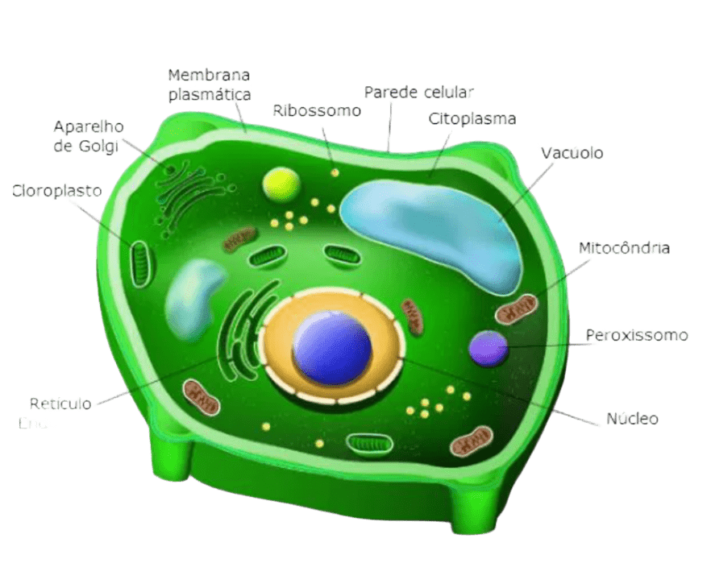
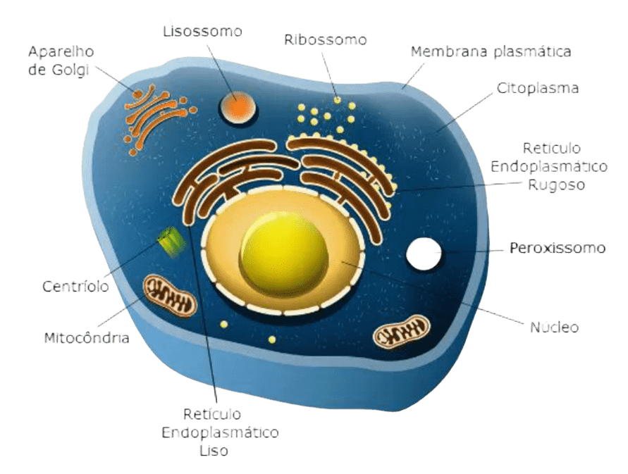

RAINBOW
CIÊNCIA

Segundo Trimestre:
veja abaixo os assuntos do segundo trimestre
-
+
Citologia
O que seria?
A citologia, também conhecida como biologia celular, é o ramo que estuda as células, suas estruturas e funções. O objetivo da citologia é compreender como as células são feitas e como funcionam, ajudando a entender processos básicos da vida diária e o desenvolvimento de doenças.
A palavra citologia deriva do grego kytos, célula e logos, estudo. Esse ramo desenvolveu-se a partir da criação do microscópio (1590), já que a maioria das células são minúsculas e a sua visualização depende de um equipamento que as amplie. O físico Robert Hooke fazia várias observações de plantas, animais e pequenos objetos no microscópio, ao mesmo tempo que tentava aperfeiçoar o equipamento. Em 1663, Robert Hooke cortou um pedaço de cortiça e observou ao microscópio. Ele notou que existiam compartimentos, os quais ele denominou de células.A partir daí, a citologia começou a desenvolver-se como ciência. O avanço dos microscópios contribuiu para que as estruturas das células fossem observadas e estudadas
Fim do conteúdo...
- 1. Menor estrutura, diâmetro máximo é de 5 μm.
- 2. Funcionamento simples.
- 3. Não há organelas membranosas.
- 4. Material genético está no citoplasma.
- 5. Molécula de DNA circular.
- 6. Reproduzem-se por fissão binária assexuada.
- 7. Constituem seres unicelulares.
- 8. Reino Monera.
- 9. Bactérias e arqueias.
- 1. Maior estrutura, diâmetro máximo é de 100 μm.
- 2. Funcionamento complexo.
- 3. Possui organelas membranosas.
- 4. Material genético está dentro do núcleo.
- 5. Molécula de DNA longa e filamentar.
- 6. Reproduzem-se por mitose e meiose.
- 7. Formam seres uni ou pluricelulares.
- 8. Reinos Protista, Fungi, Plantae e Animalia.
- 9. Fungos, plantas e animais.
-
+
Organelas Citoplasmáticas
O que eu posso aprender sobres elas?
células animais quanto as vegetais compartilham muitas organelas citoplasmáticas essenciais para suas funções metabólicas e estruturais. Como:
Célula Vegetal
1.Núcleo
O núcleo é a maior organela existente em uma célula eucarionte, pois ele é responsável por guardar o material genético, o DNA do ser vivo e comandar tudo que acontece dentro da célula.
2.Mitocôndrias
As mitocôndrias possuem o próprio DNA (se reproduzem sozinhas) e o próprio ribossomo. Estão envolvidas por uma membrana dupla (interna e externa), chamada de cristas mitocondriais. Elas realizam a respiração celular e produzem grande parte de energia (ATP) essenciais para manter o funcionamento das células.
3.Ribossomos
Os ribossomos são pequenas estruturas em forma de grânulo. São encontradas tanto em indivíduos eucariontes quanto procariontes (não possuem a carioteca). A sua presença é muito importante, uma vez que ela atua no controle e regeneração das células.
4.Peroxissomos
Os peroxissomos são organelas celulares que produzem enzimas digestivas, que são responsáveis pela catalisação do peróxido de hidrogênio, popularmente conhecido como água oxigenada (H2O2). Isso porque a água oxigenada é uma substância tóxica para a célula e a sua produção em excesso é prejudicial à saúde. Por isso, os peroxissomos produzem uma enzima chamada de catalase, capaz de destruir essa substância.
5.Complexo de Golgi
O complexo de golgi armazena, modifica e exporta as proteínas sintetizadas no retículo endoplasmático rugoso e realiza a função de sintetizar carboidratos do tipo polissacarídeos. Essas proteínas sofrem a reação da adição de um açúcar (glicosiladas) no retículo endoplasmático e no golgi. É assim que o processo se completa, caso contrário, essas proteínas podem se tornar inativas. Além disso, são responsáveis por produzir o acrossomo (cabeça do espermatozoide).
6.Retículo endoplasmático liso
O retículo endoplasmático liso possui a função de sintetizar lipídeos, a exemplo dos fosfolipídios, óleos e esteroides (incluindo os hormônios sexuais estrogênio e testosterona), promovendo a desintoxicação da célula. Além disso, ele desempenha outra função importante que é o metabolismo celular e a quebra do álcool presente no corpo de quem ingere bebida alcoólica.
7.Retículo Endoplasmático rugoso
O Retículo Endoplasmático Rugoso (RER) recebe esse nome devido a sua estrutura rugosa e a presença de vários grânulos (ribossomos), além disso possui um formato achatado. A sua principal função é fazer a sintetização de proteínas e transportá-las para outros locais fora da célula. Já os ribossomos irão sintetizar as proteínas que serão utilizadas no interior da célula.
8.Vacúolos
A principal função dos vacúolos é garantir a reserva de substâncias como a seiva, que atua no mecanismo da pressão osmótica, conhecida como tugor. Assim, o tugor regula a entrada de água e a rigidez dos tecidos vegetais, permitindo que a planta fique mais ereta.
9.Ribossomos
Os ribossomos são pequenas estruturas em forma de grânulo. São encontradas tanto em indivíduos eucariontes quanto procariontes (não possuem a carioteca). A sua presença é muito importante, uma vez que ela atua no controle e regeneração das células.
Célula Animal
1.Núcleo
O núcleo é a maior organela existente em uma célula eucarionte, pois ele é responsável por guardar o material genético, o DNA do ser vivo e comandar tudo que acontece dentro da célula.
2.Mitocôndrias
As mitocôndrias possuem o próprio DNA (se reproduzem sozinhas) e o próprio ribossomo. Estão envolvidas por uma membrana dupla (interna e externa), chamada de cristas mitocondriais. Elas realizam a respiração celular e produzem grande parte de energia (ATP) essenciais para manter o funcionamento das células.
3.Ribossomos
Os ribossomos são pequenas estruturas em forma de grânulo. São encontradas tanto em indivíduos eucariontes quanto procariontes (não possuem a carioteca). A sua presença é muito importante, uma vez que ela atua no controle e regeneração das células.
4.Peroxissomos
Os peroxissomos são organelas celulares que produzem enzimas digestivas, que são responsáveis pela catalisação do peróxido de hidrogênio, popularmente conhecido como água oxigenada (H2O2). Isso porque a água oxigenada é uma substância tóxica para a célula e a sua produção em excesso é prejudicial à saúde. Por isso, os peroxissomos produzem uma enzima chamada de catalase, capaz de destruir essa substância.
5.Complexo de Golgi
O complexo de golgi armazena, modifica e exporta as proteínas sintetizadas no retículo endoplasmático rugoso e realiza a função de sintetizar carboidratos do tipo polissacarídeos. Essas proteínas sofrem a reação da adição de um açúcar (glicosiladas) no retículo endoplasmático e no golgi. É assim que o processo se completa, caso contrário, essas proteínas podem se tornar inativas. Além disso, são responsáveis por produzir o acrossomo (cabeça do espermatozoide).
6.Retículo Endoplasmático liso
O retículo endoplasmático liso possui a função de sintetizar lipídeos, a exemplo dos fosfolipídios, óleos e esteroides (incluindo os hormônios sexuais estrogênio e testosterona), promovendo a desintoxicação da célula. Além disso, ele desempenha outra função importante que é o metabolismo celular e a quebra do álcool presente no corpo de quem ingere bebida alcoólica.
7.Retículo Endoplasmático rugoso
O Retículo Endoplasmático Rugoso (RER) recebe esse nome devido a sua estrutura rugosa e a presença de vários grânulos (ribossomos), além disso possui um formato achatado. A sua principal função é fazer a sintetização de proteínas e transportá-las para outros locais fora da célula. Já os ribossomos irão sintetizar as proteínas que serão utilizadas no interior da célula.
8.Lisossomos
Os lisossomos são organelas celulares que contêm substâncias digestivas formadas no retículo endoplasmático rugoso e amadurecidas pelo complexo golgiense. Assim, sua função é digerir moléculas orgânicas como lipídios, carboidratos, proteínas e ácidos nucleicos (DNA e RNA).
9.Centríolos
Os centríolos são organelas formadas por microtúbulos que vão ajudar os cromossomos a se separarem na hora da divisão celular (mitose e meiose). Estão presentes também em cílios e flagelos, auxiliando na locomoção de algumas células.
Fim do conteúdo...
Células
Qual é a diferença entre elas?
As principais diferença entre células eucariontes e procariontes são:
Células procariontes
Células eucariontes
Células animais e vegetais:
Parede celular:
As células vegetais possuem uma parede celular de celulose que as reveste externamente, enquanto as células animais não possuem. A parede celular oferece resistência e proteção, além de controlar a entrada de água e a troca de substâncias entre células.
Formato:
As células animais possuem formato irregular, enquanto as células vegetais possuem uma forma fixa.
Organelas:
As células vegetais possuem organelas exclusivas, como os plastos, os vacúolos de suco celular e o glioxissoma. As células animais possuem organelas exclusivas, como os lisossomos.
Produção de energia:
As células vegetais produzem energia por meio da fotossíntese, utilizando os cloroplastos. As células animais produzem energia por meio da respiração celular, que ocorre nas mitocôndrias.
Cílios e flagelos:
As células animais podem apresentar cílios e flagelos, o que não ocorre na célula vegetal.
Fim do conteúdo...